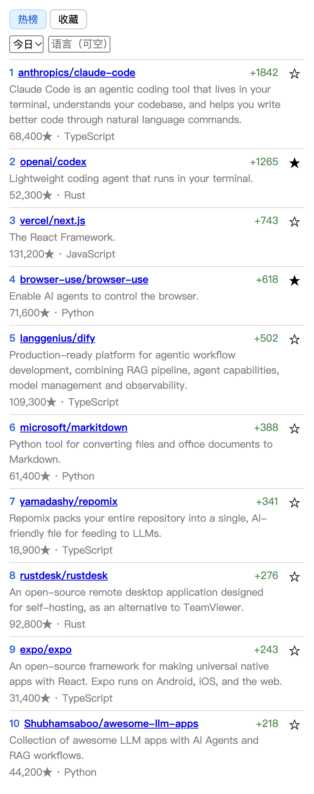
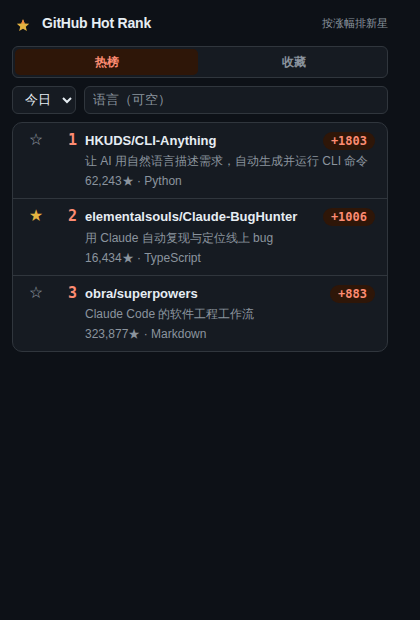

Trending 榜按绝对 star 数排名，老牌大仓永远压在前面。GitHub Hot Rank 用差分增速重新排榜：今日 +60★ 的 2k★ 新仓，比今日 +20★ 的 200k★ 巨头排得更高。
四个功能，一个目标：让涨得快的仓库先被看见。
今日 / 本周 / 本月 + 语言过滤，Trending 数据按增速差分重新排序。
浏览任意 GitHub 仓库时，注入该仓库当前增速名次徽章。
收藏仓库每日快照，涨速突变（Δ1 ≥ 10 且 ≥ 3× 前期日均）时推送通知。
零依赖脚本每日采集快照、差分 Δ1 / Δ7 增速榜；正式形态的增速数据由服务端 API 提供。
增速数据 GitHub 已经不给了——REST stargazers 时间戳接口 404，GraphQL 也没有对应字段。所以榜单建立在自建快照差分上：
采集 — background 每日 alarm 拉一次 Trending 与收藏仓的 star 数，落成本地快照。
差分 — Δ1 / Δ7 按最近快照差分计算，7 天跨度超过 8 天按缺失处理，不出假数。
排榜 — 按 Δ 降序排名，同时检测 Δ1 相对前期日均的突变，触发提醒。
node scripts/collect.mjs add owner/repo # 追踪仓库
node scripts/collect.mjs # 采集今日快照
node scripts/growth.mjs # 差分出 Δ1 / Δ7 增速榜真实 popup 渲染截图（注入演示数据），深浅两套主题跟随系统。


Trending 按绝对 star 数排，赢家永远是老牌大仓。GitHub Hot Rank 对同一份数据做 Δ1 / Δ7 差分后按增速排序，2k★ 新仓只要涨得快就能排到前面。
不需要登录。Trending 数据与 star 数来自 github.com / api.github.com 公开接口，快照与收藏存在本机扩展 storage 里。
GitHub 官方已不提供：REST stargazers 时间戳接口返回 404，GraphQL 也没有按时间取 star 的字段。所以只能自建每日快照再差分。
扩展本身：当前版本无账号体系，storage / alarms / notifications 三个权限只用于本地快照、每日采集与突变提醒；网络访问限 github.com 与 api.github.com。路线图：产品形态为 服务端 API + 薄客户端扩展——榜单数据由服务端统一采集差分，扩展只消费榜单。
本官网：访问量用 Cloudflare Web Analytics 统计——不设 cookie、不做跨站追踪、不收集个人身份信息，只记录页面浏览量与来源、地区、浏览器版本等匿名维度。